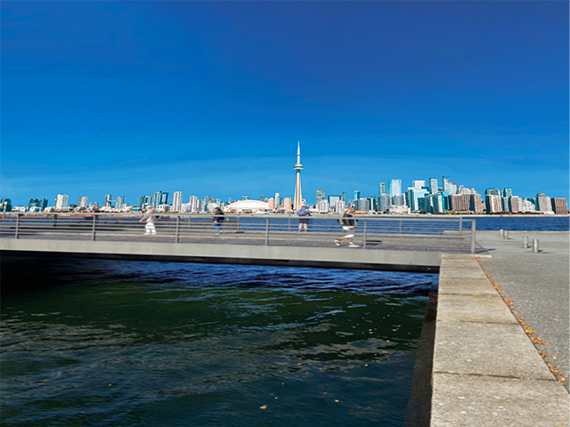

Unisport Retur/Reklamation Logo
KORT OM:
Kort om:
I min fritid arbejder jeg for Unisport i deres retur/reklamations afdeling på deres lager i Albertslund. Jeg blev hjemsendt under Covid-19 tiden, og for at jeg ikke skulle kede mig bad mine kollegaer mig om at give dem et logo som de vil printe på nogle trøjer og give til afdelingen.
Photoshop Opgave fra Flow 1
KORT OM:
En Photoshop opgave fra Flow 1. Baggrunden med København er blevet skiftet ud med Torontos skyline. Ellers er det hjørnet af taget fra Operaen blevet fjernet.